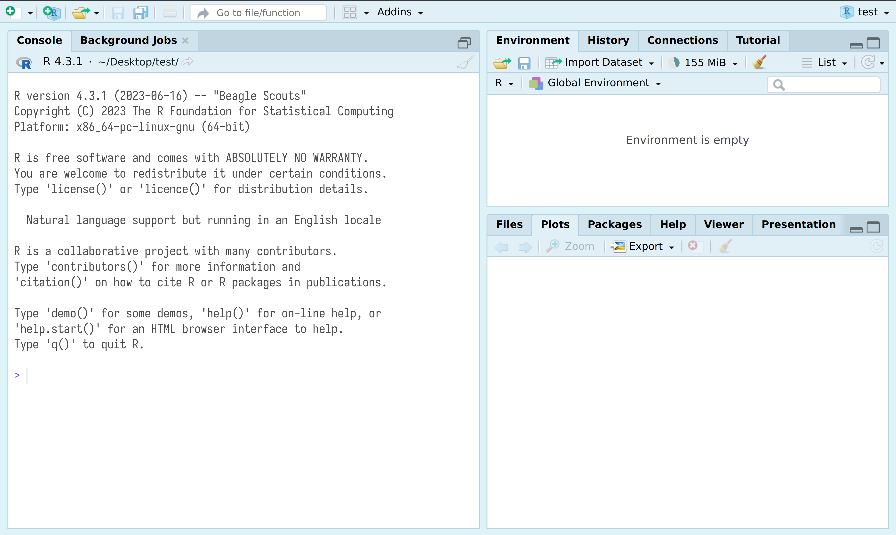
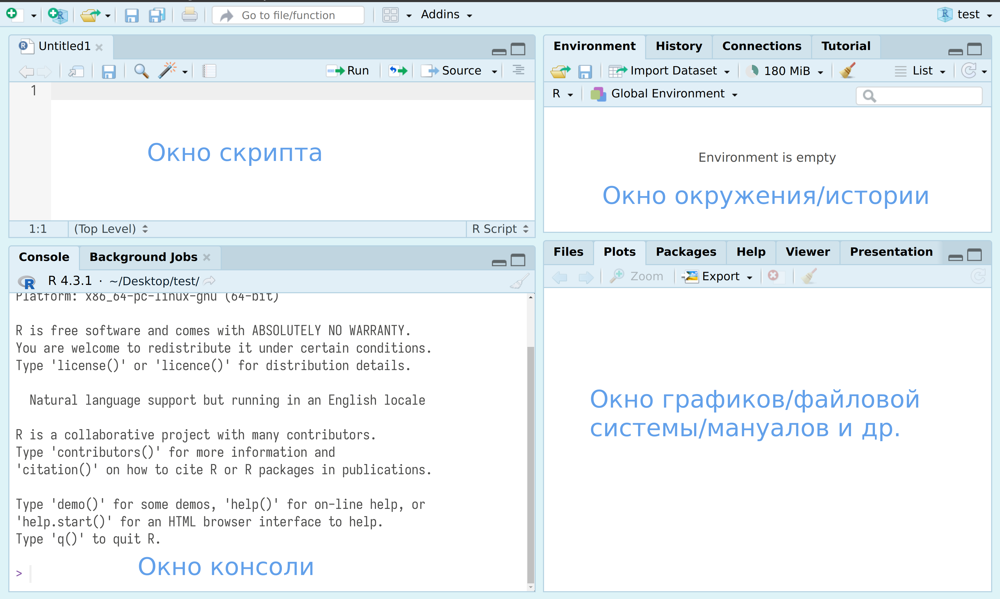

R version 4.5.0 (2025-04-11)1 Начало работы
1.1 Установка R и RStudio
Мы будем использовать R, так что для занятий понадобятся:
- R
- RStudio — IDE для R (можно скачать здесь)
Вместо RStudio можно поставить VS Code или Positron. По сути, Positron – это тот же VS Code, но без необходимости устанавливать расширения.
Мы будем использовать следующую версию R:
Для работы в облаке ☁️ можно использовать RStudio Cloud, но в бесплатной версии есть ограничения.
1.2 Знакомство с RStudio
RStudio — основная среда разработки (IDE) для R. После установки R и RStudio можно открыть RStudio и перед вами предстанет что-то похожее на изображение ниже:

После нажатия на двойное окошко чуть левее надписи Environment откроется окно скрипта.

Все следующие команды можно:
- вводить в окне консоли, и тогда для исполнения следует нажимать клавишу
Enter. - вводить в окне скрипта, и тогда для исполнения следует нажимать клавиши
Ctrl/Cmd + Enterили на команду Run на панели окна скрипта. Все, что введено в окне скрипта можно редактировать как в любом текстовом редакторе, в том числе сохранятьCtrl/Cmd + S.
Для начала попробуйте получить информацию о сессии, введя в консоли такую команду:
sessionInfo()sessionInfo() – это функция. О функциях можно думать как о глаголах (“сделай то-то!”). За названием функции всегда следуют круглые скобки, внутри которых могут находиться аргументы функции. Аргументы – это что-то вроде дополнений и обстоятельств. Аргументы могут быть обязательные и необязательные. Чтобы узнать, каких аргументов требует функция, надо вызывать help: ?mean(). В правой нижней панели появится техническая документация. Но также можно воспользоваться функцией args(). Попробуйте набрать в консоли args(round).
Ответ:
1.3 Пакеты
После установки R вы получите доступ к уже готовым методам статистического анализа и инструментам для визуализации. Если в базовой инсталляции R нет нужного решения – надо поискать в библиотеке пакетов. Пакет – это набор функций и иногда датасетов, созданный пользователями. На 1 июля 2023 г. в репозитории CRAN доступно 19789 пакетов. И это далеко не все: многие пакеты доступны только на GitHub.
По технической документации и так называемым “виньеткам” можно понять, какой пакет вам нужен. Например, вот так выглядит виньетка пакета RPerseus, при помощи которого можно получить доступ к корпусу греческой и латинской литературы.
Бывают еще “пакеты пакетов”, то есть очень большие семейства функций, своего рода “диалекты” R. Таково семейство tidyverse, объединяемое идеологией “опрятных” данных. Про него мы еще будем говорить.
Пакеты для работы устанавливаются один раз, однако подключать их надо во время каждой сессии. Чтобы установить новый пакет, можно воспользоваться меню Tools > Install Packages. Также можно устанавливать пакеты из консоли. Установим пакет с интерактивными уроками программирования на языке R:
install.packages("swirl")Для подключения используем функцию library(), которой передаем в качестве аргумента название пакета без кавычек:
library(swirl)1.4 Рабочая директория
Перед началом работы проверьте свою рабочую директорию при помощи getwd(). Для смены можно использовать как абсолютный, так и относительный путь:
setwd("/Users/name/folder")
# искать в текущей директории
setwd("./folder")
# перейти на уровень вверх
setwd("../")Также для выбора рабочей директории можно использовать меню R Session > Set Working Directory.
1.5 R как калькулятор
Можно использовать R как калькулятор. Для этого вводим данные рядом с символом приглашения >, который называется prompt.
sqrt(4) # квадратный корень[1] 22^3 # степень[1] 8log10(100) #логарифм[1] 2Если в начале консольной строки стоит +, значит предыдущий код не завершен. Например, вы забыли закрыть скобку функции. Ее можно дописать на следующей строке. Попробуйте набрать sqrt(2 в консоли.
1.6 Операторы присваивания
Чтобы в окружении появился новый объект, надо присвоить результат вычислений какой-нибудь переменной при помощи оператора присваивания <- (Alt + - (Windows) или Option + - (Mac)). Знак = также работает как оператор присваивания, но не во всех контекстах, поэтому им лучше не пользоваться.
x <- 2 + 2 # создаем переменную
y <- 0.1 # создаем еще одну переменную
x <- y # переназначаем
x + y[1] 0.2Сочетание клавиш для оператора присваивания: Option/Alt + -. Имя переменной, как и имя функции, может содержать прописные и строчные буквы, точку и знак подчеркивания.
Теперь небольшое упражнение.
Если все получилось, можно двигаться дальше! Но сначала зафиксируем несколько новых функций из этих первого урока.
Ответ:
Ответ:
Ответ:
1.7 Пайпы (конвееры)
В нашем коде мы часто будем использовать знаки конвеера (или пайпы): |> (в вашей версии он может выглядить иначе: %>%; переключить оператор можно в Global Options). Они призваны показывать последовательность действий. Сочетание клавиш: Ctrl/Cmd + Shift + M.
mean(sqrt(abs(sin(1:100)))) [1] 0.76542641:100 |>
sin() |>
abs() |>
sqrt() |>
mean()[1] 0.76542641.8 Векторы
Вектор – это объект, предназначенный для хранения данных. К таким же объектам относятся также матрицы, списки, датафреймы и др. Заметим, что в языке R нет скаляров (отдельных чисел). Числа считаются векторами из одного элемента.
x <- 2
class(x) # числовой вектор[1] "numeric"length(x) # длина вектора[1] 1Как вы уже поняли, функция c() позволяет собрать несколько элементов в единый вектор:
x <- c(3, 5, 7)
x_mean <- mean(x)
x_mean[1] 5
Над векторами можно совершать арифметические операции, но будьте внимательны, применяя операции к векторам разной длины: в этом случае более короткий вектор будет переработан, то есть повторен до тех пор, пока его длина не сравняется с длиной вектора большей длины.
x <- c(1.2, 2.51, 3.8)
y <- 4
x + y [1] 5.20 6.51 7.80Как-то так:
\[ \left( \begin{array}{c} 1.2 \\ 2.51 \\ 3.8 \end{array} \right) + \left( \begin{array}{c} 4 \\ 4 \\ 4 \end{array} \right) \]
Векторы можно индексировать, то есть забирать из них какие-то элементы:
x <- seq(1, 5, 0.5)
x[4:5] # индексы начинаются с 1 (в отличие от Python)[1] 2.5 3.0Вектор может хранить данные разных типов:
- целое число (integer);
- число с плавающей точкой (numeric, также называются double, то есть число двойной точности);
- строку (character);
- логическую переменную (logical);
- категориальную переменную, или фактор (factor).
# проверить тип данных
x <- sqrt(2)
class(x)[1] "numeric"is.integer(x)[1] FALSEis.numeric(x)[1] TRUEСоздавать векторы можно не только при помощи c(). Вот еще два способа.
seq(1, 5, 0.5)[1] 1.0 1.5 2.0 2.5 3.0 3.5 4.0 4.5 5.0rep("foo", 5)[1] "foo" "foo" "foo" "foo" "foo"Факторы внешне похожи на строки, но в отличие от них хранят информацию об уровнях категориальных переменных. Уровень может обозначаться как числом (например, 1 и 0), так и строкой.
t <- factor(c("A", "B", "C"), levels = c("A", "B", "C"))
t[1] A B C
Levels: A B CВажно: вектор может хранить данные только одного типа. При попытке объединить в единый вектор данные разных типов они будут принудительно приведены к одному типу:
x <- c(TRUE, 1, 3, FALSE)
x # логические значения приведены к числовым[1] 1 1 3 0y <- c(1, "a", 2, "лукоморье")
y # числа превратились в строки[1] "1" "a" "2" "лукоморье"Логические векторы можно получить в результате применения логических операторов (== “равно”, != “не равно”, <= “меньше или равно”) к данным других типов:
x <- 1:10 # числа от 1 до 10
y <- x > 5
y # значения TRUE соответствуют единице, поэтому их можно складывать [1] FALSE FALSE FALSE FALSE FALSE TRUE TRUE TRUE TRUE TRUEsum(y)[1] 5Функции all() и any() также возвращают логические значения:
x <- 10:20
any(x == 15)[1] TRUEall(x > 9)[1] TRUE1.9 Отсутствие данных
Отсутствие данных любого типа в R передается двумя способами. NULL означает, что значение не существует. Например, если мы создадим пустой вектор, то при попытке распечатать его получим NULL. А вот длина пустого вектора равна нулю!
y <- c()
y NULLlength(y) [1] 0NA (not available) указывает на то, что значение существует, но оно неизвестно. Любые операции с NA приводят к появлению новых NA! Сравните:
x <- c(1, NA, 2)
mean(x)[1] NAy <- c(1, NULL, 2)
mean(y)[1] 1.5Как проверить, есть ли в данных NA или NULL? Знак == здесь не подойдет.
x <- NA
x == NA[1] NAy <- NULL
y == NULLlogical(0)Для этого есть специальные функции.
is.na(x)[1] TRUEis.null(y)[1] TRUEWhen some people first get to R, they spend a lot of time trying to get rid of NAs. People probably did the same sort of thing when zero was invented. NA is a wonderful thing to have available to you. It is seldom pleasant when your data have missing values, but life if much better with NA than without.
Burns (2012)
Как избавиться от NA? В некоторых случаях достаточно аргумента функции.
mean(c(1, NA, 2), na.rm=T) [1] 1.51.10 Списки
В отличие от векторов списки могут хранить данные разных типов.
my_list <- list(
a = c("a", "b", "c"),
b = c(1, 2, 3),
c = c(TRUE, FALSE, TRUE)
)
my_list$a
[1] "a" "b" "c"
$b
[1] 1 2 3
$c
[1] TRUE FALSE TRUEМожно получить доступ как к элементам списка целиком, так и к их содержимому.
my_list$a # обращение к поименованным элементам [1] "a" "b" "c"my_list[2] # одинарные квадратные скобки извлекают элемент списка целиком$b
[1] 1 2 3class(my_list[2])[1] "list"my_list[[2]] # элементы второго элемента [1] 1 2 3class(my_list[[2]])[1] "numeric"my_list$c[1]# первый элемент второго элемента[1] TRUEОбратите внимание, что my_list[2] и my_list[[2]] возвращают объекты разных классов. Нам это еще понадобится при работе с XML.
Ответ:
Ответ:
Ответ:
Со списками покончено. Теперь можно пойти выпить кофе с my_list$pastries[13]. Дальше будет сложнее, но интереснее.
1.11 Матрицы
Матрица – это вектор, который имеет два дополнительных атрибута: количество строк и количество столбцов. Из этого следует, что матрица, как и вектор, может хранить данные одного типа. Проверим.
M = matrix(c(1, 2, 3, 4), nrow = 2)
M # все ок [,1] [,2]
[1,] 1 3
[2,] 2 4M = matrix(c(1, 2, 3, "a"), nrow = 2)
M # все превратилось в строку! [,1] [,2]
[1,] "1" "3"
[2,] "2" "a" В матрице есть ряды и столбцы. Их количество определяет размер (порядок) матрицы. Выше мы создали матрицу 2 x 2. Элементы матрицы, как и элементы вектора, можно извлекать по индексу. Сначала указывается номер ряда (строки), потом номер столбца.
M = matrix(c(1, 2, 3, 4), nrow = 2)
M [,1] [,2]
[1,] 1 3
[2,] 2 4M[1, ] # первая строка полностью[1] 1 3M[,2] # второй столбец полностью[1] 3 4M[1,1] # одно значение[1] 1Обратите внимание, как меняется размерность при индексировании.
M = matrix(c(1, 2, 3, 4), nrow = 2)
dim(M) # функция для извлечения измерений[1] 2 2dim(M[1, ]) NULLПопытка узнать измерения вектора возвращает NULL, потому что, с точки зрения R, векторы не являются матрицами из одного столбца или одной строки и потому не имеют измерений.
1.12 Таблицы (датафреймы)
Если матрица – это двумерный аналог вектора, то таблица (кадр данных, data frame) – это двумерный аналог списка. Как и список, датафрейм может хранить данные разного типа.
# создание датафрейма
df <- data.frame(
names = c("John", "Mary"),
age = c(18, 25),
sport = c("basketball", "tennis")
)
df |>
print() names age sport
1 John 18 basketball
2 Mary 25 tennisДля извлечения данных можем использовать индексы или имена переменных.
df$names # или df[,"names"] [1] "John" "Mary"df[1, ] |>
print() names age sport
1 John 18 basketballВот так мы можем узнать имена столбцов, извлечь ряды по значению переменной или узнать тип данных в столбцах.
colnames(df) [1] "names" "age" "sport"df[df$name == "John", ] |>
print() names age sport
1 John 18 basketball# узнать тип данных в столбцах
str(df) 'data.frame': 2 obs. of 3 variables:
$ names: chr "John" "Mary"
$ age : num 18 25
$ sport: chr "basketball" "tennis"Преобразовать тип данных:
df$age <- as.character(df$age)1.13 Практическое задание
# устанавливаем и загружаем нужный пакет
install.packages("languageR")
library(languageR)
# загружаем датасет
meta <- spanishMeta
# допишите ваш код ниже
# посчитайте средний год публикации романов Камило Хосе Селы
# вычислите суммарное число слов в романах Эдуардо Мендосы
# извлеките ряды с текстами, опубликованными до 1980 г.1.14 Видео к уроку
1.15 Домашнее задание ✍️
К следующему разу задание будет очень простым, почти даже символическим (будем считать, что у нас адаптационный период). Оценка 0/1.
Пройдите любые два из оставшихся уроков
swirl(на выбор).Когда
swirlсообщит о 100% выполнении, введите свое имя в консоли или в окне скрипта, сделайте скриншот и отправьте скан ассистенту курса личным сообщением в Telegram (контакты в рабочем чате).
Дедлайн строго: до 21:00 мск четверга 11 сентября 2025 (это самая сложная часть дз).
Burns, Patrick. 2012. The R inferno. Lulu.com.